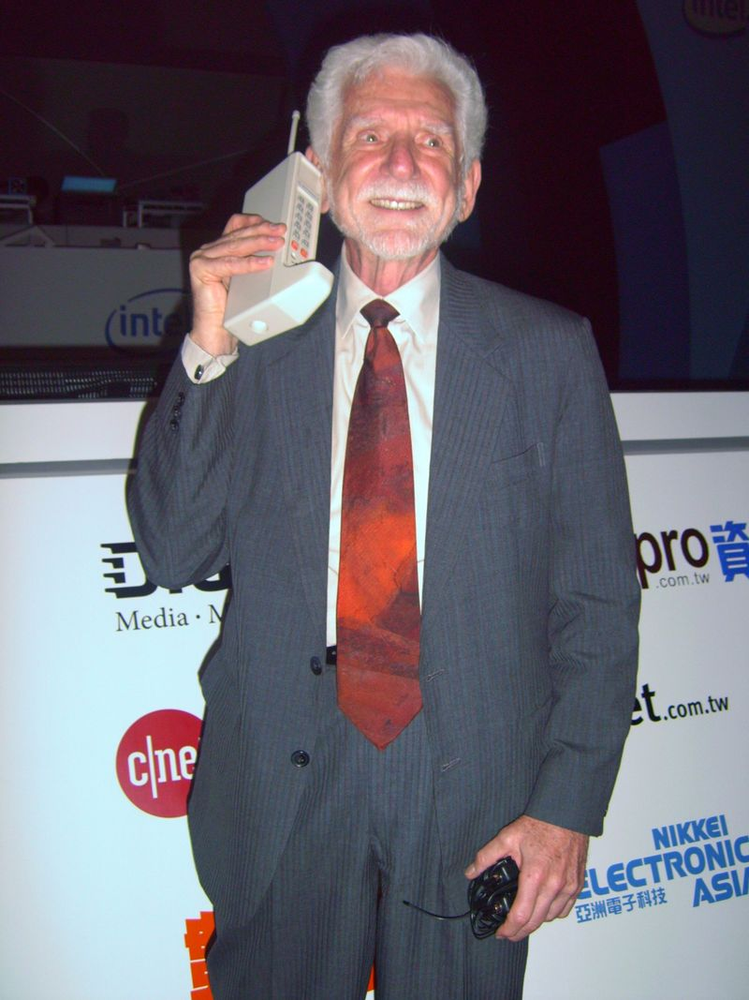

| Secciones |
|---|
En las primeras etapas de la ingeniería de radio, se concibió un servicio de radio móvil de mano. En 1917, el inventor finlandés Eric Tigerstedt presentó una patente para un "Teléfono plegable de bolsillo con un micrófono de carbono muy delgado". Los primeros predecesores de los teléfonos celulares incluyen las comunicaciones de radio analógicas de barcos y trenes. La carrera para crear dispositivos telefónicos portátiles realmente comenzó después de la Segunda Guerra Mundial, con la evolución que tiene lugar en muchos países. Los avances de la telefonía móvil se han trazado en "generaciones" sucesivas, empezando por los servicios "0G" (generación cero), tales como Servicio de Telefonía Móvil de Sistemas de Bell y su sucesor, el Servicio de Telefonía Móvil Mejorada. Estos sistemas "0G" no eran celular, soportaban algunas llamadas simultáneas, y eran muy caros.
En 1991, la segunda generación (2G) de tecnología celular digital fue lanzada en Finlandia por Radiolinja en el estándar GSM. Esto provocó la competencia en el sector ya que los nuevos operadores desafiaron a los operadores de red 1G existentes. Diez años más tarde, en 2001, la tercera generación (3G) fue lanzada en Japón por NTT DoCoMo en el estándar WCDMA. Esto fue seguido de 3.5G, 3G+ o 3G turbo mejoras basadas en el acceso de paquetes de alta velocidad (HSPA) de la familia, lo que permite a las redes UMTS tienen mayores velocidades de transferencia de datos y la capacidad.
 RegresarAcontinuacion algunas compañias de las mas importantes en telefonos moviles, donde se vera lo importante de esas empresas.
RegresarApple Inc. es una empresa multinacional estadounidense que diseña y produce equipos electrónicos, software y servicios en línea, con sede en Cupertino (California, Estados Unidos) y la sede europea en la ciudad de Cork (Irlanda).3 Sus productos de hardware incluyen el teléfono inteligente iPhone, la tableta iPad, el ordenador personal Mac, el reproductor de medios portátil iPod, el reloj inteligente Apple Watch y el reproductor de medios digitales Apple TV. Entre el software de Apple se encuentran los sistemas operativos iOS, macOS, watchOS y tvOS, el explorador de contenido multimedia iTunes, la suite iWork (software de productividad), Final Cut Pro X (una suite de edición de vídeo profesional), Logic Pro (software para edición de audio en pistas de audio), Xsan (software para el intercambio de datos entre servidores) y el navegador web Safari.
RegresarSamsung :Es un conglomerado de empresas multinacionales con sede en Seúl, Corea del Sur. Se trata del mayor grupo empresarial surcoreano, con numerosas filiales que abarcan negocios como la electrónica de consumo, tecnología, finanzas, aseguradoras, construcción, biotecnología y sector servicios entre otros. Las empresas más importantes que controla son Samsung Electronics, la segunda mayor compañía electrónica por ingresos;Samsung Heavy Industries, el segundo mayor constructor naval mundial; Samsung C&T, dedicada a la construcción civil; la aseguradora Samsung Life Insurance, y la agencia de publicidad Cheil Worldwide.
Samsung ha tenido una gran influencia en el desarrollo económico, político, mediático y cultural de Corea del Sur. Se estima que todas sus empresas afiliadas representan la quinta parte de las exportaciones del país, mientras que su ingreso representa el 17% del producto interno bruto nacional.
RegresarLG Group es una empresa con sede Corea del Sur que fabrica productos electrónicos, teléfonos móviles y productos petroquímicos y opera filiales como LG Electronics.
Creada en 1947, asumió el nombre abreviado de "LG" en 1995. LG es una abreviatura de "Lucky Goldstar" (Goldstar: Estrella dorada) en Corea del Sur, que ha sido traducido al inglés como Lucky Venus (Goldstar). Antes, muchos de sus productos electrónicos fueron vendidos bajo la marca Goldstar, mientras que otros productos para el hogar (no disponibles fuera de Corea del Sur) fueron vendidos bajo la marca "Lucky". Esta última era famosa por los productos de limpieza del hogar y detergentes para ropa en Corea del Sur. Antes de la industrialización masiva de la sociedad de Corea del Sur, el nombre de Lucky era sinónimo de pasta de dientes.
Recientemente, la compañía ha tratado de actualizar su eslogan sugiriendo que "LG" significa "Life's Good" ("La vida es buena"). En enero de 2009, LG Group compró el dominio LG.com1 La compañía incluso está en el "VB.com Internet Hall of Fame".
 Regresar
Regresar